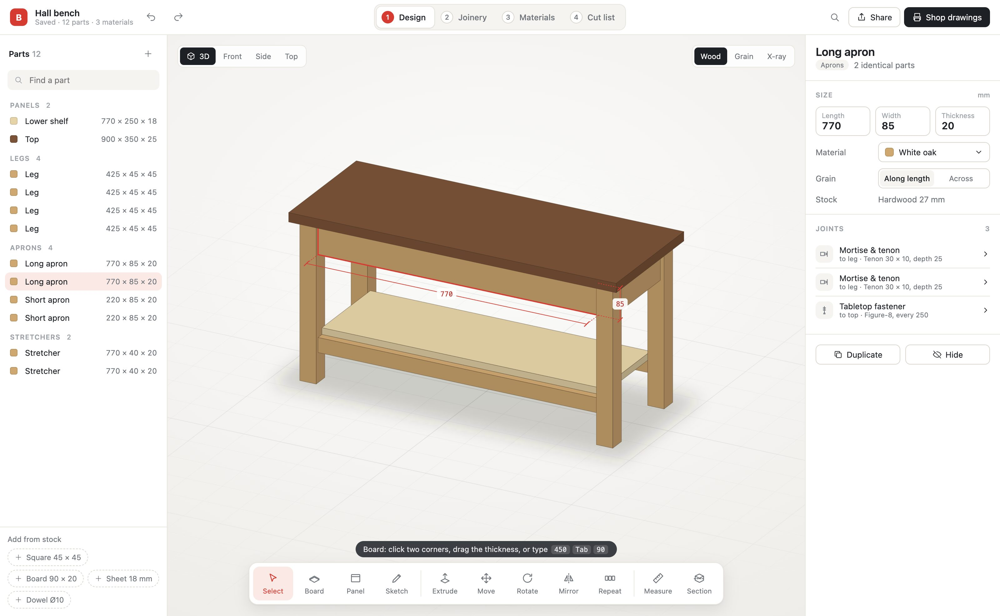

A · Workshop flow
The app is organised around the woodworker's process rather than a generic toolbox. Each stage brings its own tools and panels.
- Stages Design → Joinery → Materials → Cut list replace the tool rail as primary navigation.
- A parts list with real dimensions replaces the outliner.
- A part card edits length, width, thickness, grain and joints.

B · Canvas
A full-bleed, dark viewport with floating islands, closer to Figma, Shapr3D or Plasticity than to a desktop CAD tray.
- Icon dock at the bottom with shortcuts in tooltips.
- Contextual panel anchored to the selection, instead of a fixed inspector.
- Numeric input follows the cursor; ⌘K opens a command palette.

C · Blueprint
The workspace is a technical drawing sheet. It leans into the craft identity: ink lines, red pencil for selection and dimensions.
- Isometric view plus live front, plan and side elevations.
- The bill of materials doubles as the outliner.
- The title block doubles as the property editor.